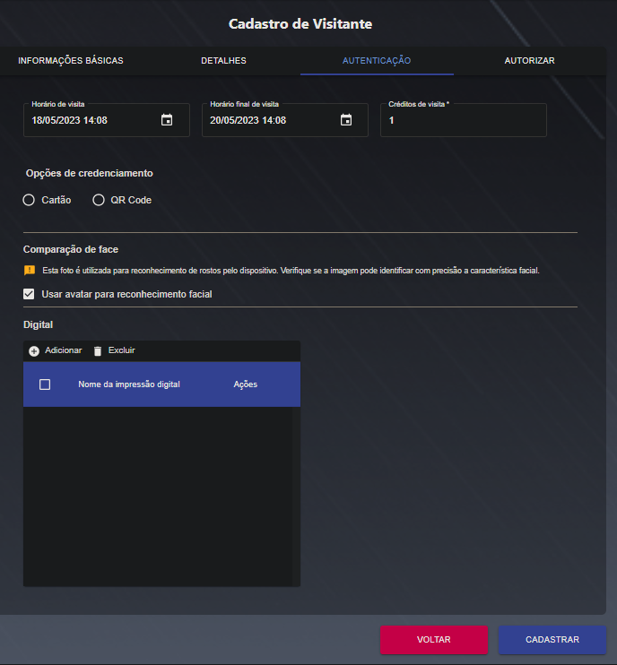

Cadastro de Funcionários
Cadastrar
Nesta janela é possível cadastrar um funcionário após preencher os campos obrigatórios (*). Nas duas primeiras abas - Informações básicas e detalhes - devem ser adicionadas informações pessoais referentes ao funcionário.
Na aba Autenticação. Há as informações pertinentes ao método de acesso e credenciais atribuídas ao funcionário, podendo ser elas: Cartão: Cartão/crachá, possível atribuir mais de um crachá ao funcionário. Senha: Utiliza ID + senha (numérica) para realizar o acesso. O ID fica disponível na consulta dos cadastros de funcionários. Comparação de face: Ao habilitar o checkbox, será utilizada a foto do perfil (aba informações básicas) para comparação facial. Caso não haja foto cadastrada ou o checkbox não seja marcado o reconhecimento facial não irá funcionar. Veículo: Indica quantas vagas aquele funcionário possuí e qual a placa dos seus veículos
Na aba autorizar, é onde se dá a permissão de acesso do funcionário aos grupos de portas correspondentes. Só serão listados nessa aba os grupos de portas pertencentes a Empresa/departamentos atribuídos a este funcionário na aba “Informações básicas”.
Cadastro de visitantes
Cadastrar
Nesta janela é possível cadastrar um funcionário após preencher os campos obrigatórios (*). Nas duas primeiras abas - Informações básicas e detalhes - devem ser adicionadas informações pessoais referentes ao funcionário.

Na aba Autenticação. Há as informações pertinentes ao método de acesso e credenciais atribuídas ao funcionário, podendo ser elas: Cartão: Cartão/crachá, possível atribuir mais de um crachá ao funcionário. Senha: Utiliza ID + senha (numérica) para realizar o acesso. O ID fica disponível na consulta dos cadastros de funcionários. Comparação de face: Ao habilitar o checkbox, será utilizada a foto do perfil (aba informações básicas) para comparação facial. Caso não haja foto cadastrada ou o checkbox não seja marcado o reconhecimento facial não irá funcionar. Veículo: Indica quantas vagas aquele funcionário possuí e qual a placa dos seus veículos.
Na aba autorizar, é onde se dá a permissão de acesso do funcionário aos grupos de portas correspondentes. Só serão listados nessa aba os grupos de portas pertencentes a Empresa/departamentos atribuídos a este funcionário na aba “Informações básicas”.